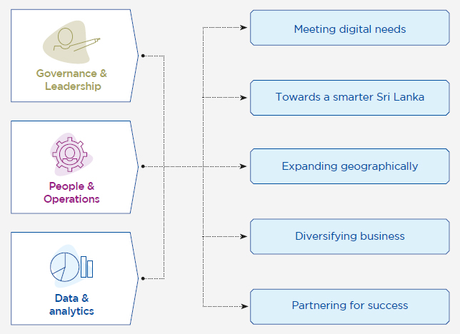

Business Model
Strategy


Following over 162 years of empowering the nation through infrastructure services SLT has contributed to the realisation of individual and organisational aspirations. Continuing on its transformational journey from communications service provider (CSP) to digital service provider (DSP), SLT is laying the foundation for a new era in Sri Lanka – the digital era.
A future-fit strategy
While SLT is a successful CSP today, it is vital to continue taking steps towards becoming a DSP tomorrow. Taking cognisance of the vital role SLT has to play and as a key partner in the Government’s mission to achieve Smart Sri Lanka, SLT has aligned its strategy with strategic projects to support the Government’s digital transformation.
It will also ensure that Sri Lanka is able to move ahead in the global arena in tandem with international digital advancements.
Key aspects of SLT’s transformation journey include:
- Meeting the 3600 digital needs of customers
- Contributing to Smart Sri Lanka
- Continuing geographical expansion
- Continuing business diversification through subsidiaries
- Leveraging and nurturing strong, mutually beneficial partnerships
SLT’s journey will encompass both business-to-customer and business-to-business routes embracing diverse stakeholder groups including:
- B2C – individuals in urban and rural areas
- B2B – organisations, communities and industries
This journey will be steered by a three-pronged approach under administrative, infrastructural and socio-economic aspects, involving Governance and leadership, People and operations and Data and analytics.

Meeting digital needs
Already, SLT has made much progress on this journey. Starting with the adoption of a wider definition of the "Customer", visible improvements have been achieved across the Group on customer centricity, culture and innovation & creativity. For instance, products and services such as SLT Smart Home, storage services, SLT Digi Solutions, eSports platform have taken the Group beyond CSP, fulfilling the digital lifestyle and business needs of customers more holistically and contributing to the Smart Sri Lanka initiative.
The SLT Group continues to invest in the future, not just of the Group but of the country and its people. Technology is transforming the world rapidly and no industry is immune to its effects. Through SLT and its subsidiaries, the SLT Group has a multi-pronged strategy to transform the country for the digital era.
Technology and infrastructure only serve as the foundation for SLT to enable the digital future for Sri Lanka and its citizens. As Sri Lankans become increasingly connected and tech savvy, they will seek new opportunities in Smart Sri Lanka; the SLT Group is working towards this future by crafting digital products, services, and solutions that will facilitate the digital journey of the Group and that of our customers.
Towards a smarter Sri Lanka
SLT is expanding its efforts in stimulating innovation, efficiency, and economic growth by identifying 14 industry verticals that serve as the basis of Smart Sri Lanka. SLT is implementing major ICT initiatives under each of these verticals in ways that leverage its infrastructure, expertise, and resources, as well as those of its subsidiaries. The initiatives will result in wide-ranging benefits for the country, urban and rural communities, business communities, and industries.
SLT remains committed to its ongoing National Fibre programme and has an ambitious plan to develop two million fibre-to-the-home (FTTH) ports by 2022 to connect every household, government, and business institution to an ultra-fast broadband network with the lowest latency.
Through the state-of-the-art Tier III National Data Centre in Pitipana, SLT provides secure and reliable data hosting and cloud computing services, all enabled by SLT’s fibre infrastructure. This infrastructure is also what will power Mobitel’s 5G network in the near future, for which it has been successfully conducting trials.
Expanding geographically
SLT has looked beyond the borders of Sri Lanka for new means of sustaining long-term growth while simultaneously boosting the quality of life for Sri Lankan citizens through cutting-edge infrastructure and technology.
Through Xyntac, its global unit, Sri Lanka Telecom is fostering an evolving digital communications ecosystem that has diversified submarine networks via ownership of major submarine cable systems and partner cable systems. SLT’s networks span continents providing highly scalable transport speeds up to multiples of 100 Gbps with the capability of networking diverse customer sites. With around the clock expert engineering support, industry specific service level agreements and network uptime, SLT brings stakeholders closer to the future of digital communications.
Combined with SLT’s portfolio of international submarine cable systems, the National Backbone Network opens up opportunities for a wide range of solutions for domestic and global operators including fixed and mobile backhaul services, global and ISP connectivity services, and intelligent business solutions for enterprises.
Diversifying business
SLT’s Big Data Strategy will see technologies such as artificial intelligence (AI), robotic process automation (RPA), and fintech solutions with blockchain technology set up the platforms necessary for the country’s digital transformation. These will create further value through an Application Protocol Interface (API) strategy and partner ecosystem that will help to create new business models and opportunities.
Organisations will be able to utilise these technologies to boost the quality and reliability of their products and services while lowering operational costs. SLT sees the potential in these technologies for transforming internal processes such as report automation, data services configuration automation, customer registration in Customer Relationship Management (CRM) applications, and more.
Partnering for success
SLT has long partnered with the Government of Sri Lanka to fulfil its visions and ambitions of a more prosperous, connected Sri Lanka.
SLT also partners with global players such as Microsoft, Oracle, Citrix, and VMware to bring cloud services to Sri Lanka through our data centres and fibre connectivity.
SLT’s subsidiaries contribute to the Group’s strategic vision and the nation’s development in multiple ways including:
- Establishing Sri Lanka and SLT’s presence on the global stage through continuous expansion
- Increasing foreign exchange revenues through growing global investments
- Utilising SLT’s existing and future investments in international submarine cable systems, multiple data centres, and global point of presence (POPs)
- Driving the creation of local content to suit the unique sensibilities of Sri Lankan people with a fully-fledged studio and facilities
- Enabling advanced opportunities for learning across the country through initiatives such as Videsa channels and online learning platforms that elevates the education industry in Sri Lanka
- Maintaining the first and only corporate-powered, research-based, fully residential university in Sri Lanka enhancing the nation's academic profile.
- Establishing Sri Lanka as an international higher education destination through future intake of international students